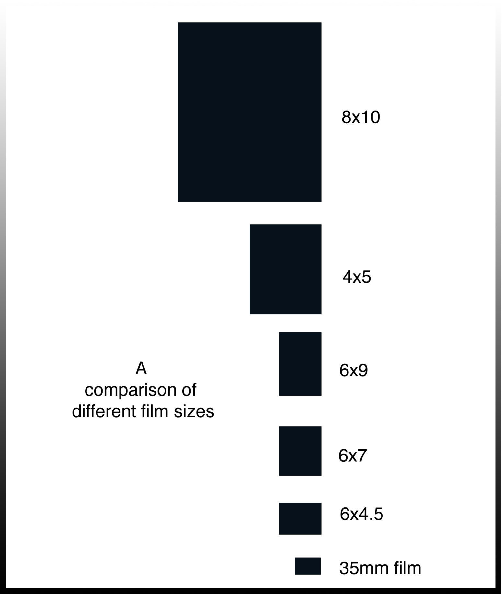
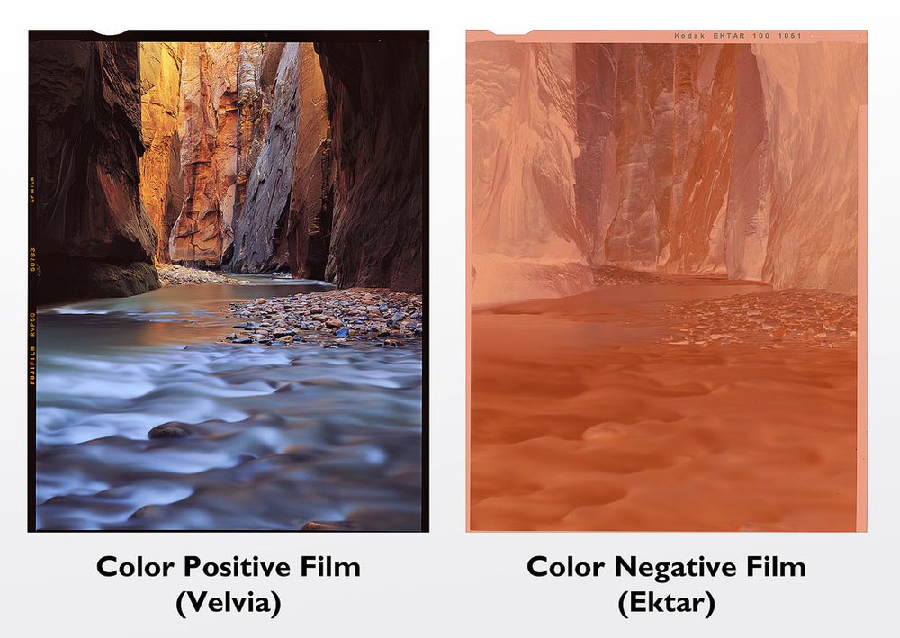

ฟิล์มถ่ายภาพ (Film Photography)
4 min read
ฟิล์มสำหรับการถ่ายภาพนั้นมีหลายประเภท เช่น ฟิล์ม 135 , ฟิล์ม 120 ไปจนถึงขนาด Large Format และยังแบ่งย่อยได้อีกมาก เช่น ฟิล์ม Negative, ฟิล์มสไลด์ , ฟิล์มหนัง ไปจนถึงฟิล์มบูด
6.1) แบ่งตามขนาดของฟิล์ม
6.1.1) Small Format : หมายถึงกล้องที่ใช้ฟิล์มขนาดเล็ก เช่น 35mm หรือฟิล์มปกติทั่วไป
6.1.2) Medium Format : เป็นกล้องที่ใช้ฟิล์ม Format 120 (ขนาด 6x6" หรือ 6x9" )
6.1.3) Large Format : เป็นกล้องที่ใช้ฟิล์มขนาดใหญ่ อย่างเช่น 4x5 นิ้ว หรือ ใหญ่กว่านั้น ซึ่งเราไม่ ค่อยได้เห็นทั่วไป
ใช้งานค่อนข้างลำบากกว่าประเภทอื่นเพราะตัวกล้องมีขนาดใหญ่เทอะทะ

6.1.2) Medium Format : เป็นกล้องที่ใช้ฟิล์ม Format 120 (ขนาด 6x6" หรือ 6x9" )
6.1.3) Large Format : เป็นกล้องที่ใช้ฟิล์มขนาดใหญ่ อย่างเช่น 4x5 นิ้ว หรือ ใหญ่กว่านั้น ซึ่งเราไม่ ค่อยได้เห็นทั่วไป
ใช้งานค่อนข้างลำบากกว่าประเภทอื่นเพราะตัวกล้องมีขนาดใหญ่เทอะทะ
6.2) แบ่งตามประเภทกรรมวิธี
6.2.1) Negative Film : เป็นฟิล์มที่หลังจากผ่านกระบวนการล้างฟิล์มแล้ว จะได้คู่สีที่ตรงกันข้ามกับ
ภาพที่ถ่ายมา จึงเป็นที่มาของคำว่า Negative
โดยฟิล์ม Negative ถือเป็นฟิล์มที่ยอดนิยมที่สุดในท้องตลาด
6.2.2) Positive Film หรือ ฟิล์มสไลด์ : จะตรงกันข้ามกับฟิล์ม Negative ก็คือฟิล์มที่ล้างออกมาจะ ได้สีตรงตามภาพจริงที่ถ่ายมาเลย
เป็นฟิล์มที่สมัยก่อนใช้ฉายแสงผ่านฟิล์ม เพื่อแสดงเป็นสไลด์ภาพ

โดยฟิล์ม Negative ถือเป็นฟิล์มที่ยอดนิยมที่สุดในท้องตลาด
6.2.2) Positive Film หรือ ฟิล์มสไลด์ : จะตรงกันข้ามกับฟิล์ม Negative ก็คือฟิล์มที่ล้างออกมาจะ ได้สีตรงตามภาพจริงที่ถ่ายมาเลย
เป็นฟิล์มที่สมัยก่อนใช้ฉายแสงผ่านฟิล์ม เพื่อแสดงเป็นสไลด์ภาพ